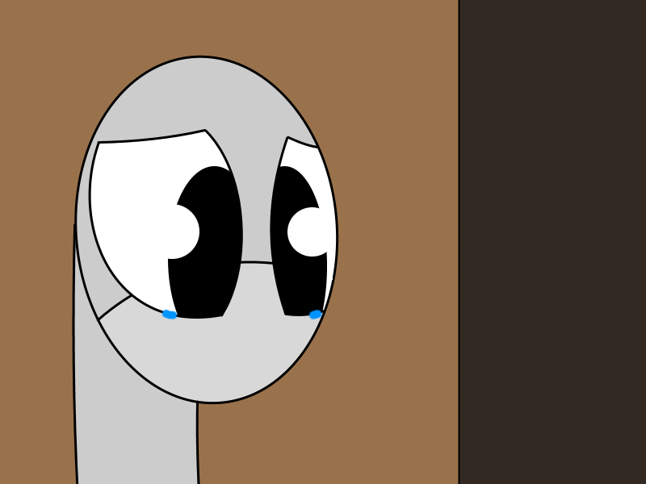

A bad day has happened. You got kicked out of your family house by your step-dad and now you are outside with no home or items to
survive on. Plus. You barely know anyone trust worthy in this neighborhood as well.
Wiwian said--
take in your surroundings
uncle steve said--
Time to aimlessly wander until something cool happens
You're pretty sure that wandering aimlessly would get you in trouble since you don't know which areas are free or off-limits. You're
not even sure if looking at things will get you into trouble!

And this is the problem with little Sockl Wooly. An adult sock who can't live on his own. You're wondering why you're not dead when
you first stepped out to the streets since you're too pathetic to live on your own. All you had and needed was your family and without
it you're nothing. This might as well be the end..
Isä said--
If you're nothing without a family, make a one.
Wiwian said--
believe in yourself just a little bit Sock
TheSockEnthusiast said--
Try to find a friendly face
Okay. You feel a bit more confident to try and survive a bit more so maybe you should try and find a familiar face that you can trust.
"Why isn't it little Sockl?"
SHIT THAT! LET'S MAKE A RUN FOR IT!!
Wait it looks like Lazlo.. Sorta..